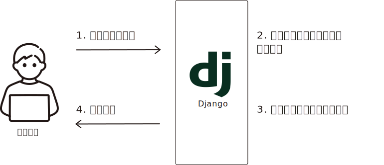

class: left, middle # Design documents 2022-08 --- # もくじ 1. 改版履歴 1. イメージ 1. 構成 - イメージ図 - 利用言語 1. 機能 ??? ページを追加した際は、更新する --- # 改版履歴 | 日付 | 変更者 | 内容 | | :------- | :---- | :--- | | 2022/08/12 | 田中 | 初版作成 | | 2022/12/10 | 田中 | 利用するフレームワークをDjangoに変更するため、構成図を修正 | --- # イメージ webページ上の操作によってリクエストし、処理を行う <div class="block_center block_height"> <img src="image/illastration.svg" alt="イメージ図"> </div> --- # 構成 ### イメージ図 <div class="box block_height"> <span class="box-title">server / docker-container</span> <div class="box"> <span class="box-title">webページ</span> <p>利用するフレームワーク</p> <p>Django</p> </div> <div class="box"> <span class="box-title">環境</span> <p>python.exe</p> </div> </div> --- # 構成 ### 処理詳細 <div class="block_center">  </div> ??? --- # 構成 ### 利用言語 - Djangoで利用 - python - html - css - javascript ??? --- # 機能 <ul> <li class="task-list-item"><input class="task-list-item-checkbox" checked type="checkbox"> キーワード検索（ドラマのタイトル、ゲームのタイトルなど…） </li> <li class="task-list-item"><input class="task-list-item-checkbox" checked type="checkbox"> 歌詞検索</li> <li class="task-list-item"><input class="task-list-item-checkbox" checked type="checkbox"> 歌手検索</li> <li class="task-list-item"><input class="task-list-item-checkbox" checked type="checkbox"> 曲名検索</li> <li class="task-list-item"><input class="task-list-item-checkbox" type="checkbox" disabled> 履歴表示</li> <li class="task-list-item"><input class="task-list-item-checkbox" type="checkbox" disabled> 採点機能</li> <li class="task-list-item"><input class="task-list-item-checkbox" type="checkbox" disabled> ランキング(J-POPランキング、洋楽ランキング、演歌ランキングなど) </li> <li class="task-list-item"><input class="task-list-item-checkbox" type="checkbox" disabled> ○○年に流行った曲（○○年当時のランキング）が見られる </li> <li class="task-list-item"><input class="task-list-item-checkbox" type="checkbox" disabled> 最新曲リスト</li> </ul> ??? --- # 参考 #### Python - 言語仕様・歴史・実装例 | オンラインPython学習サービスPyQ（パイキュー） https://lpm.pyq.jp/python.html#Actual_operation #### Python Developers Survey 2021 Results https://lp.jetbrains.com/python-developers-survey-2021/ --- # 参考 #### Django ドキュメント | Django ドキュメント | Django https://docs.djangoproject.com/ja/4.1/ #### Djangoウェブフレームワーク (Python) - ウェブ開発を学ぶ | MDN https://developer.mozilla.org/ja/docs/Learn/Server-side/Django --- # 参考 #### Markdownチートシート - slow living in the sky https://atmarksharp.v01.jp/posts/markdown-cheat-sheet.html #### Remark https://github.com/gnab/remark https://remarkjs.com/#1 #### Remark使い方メモ（Markdown でスライドを作るやつ） - Qiita https://qiita.com/opengl-8080/items/d44aec7c6c643996916b